Introdução à Iluminação no Blender Internal Render
Lâmpadas
Para simplificar, podemos dizer que o Blender tem ferramentas de iluminação directa, luz que vem de uma origem específica, e iluminação indirecta, luz que não vem de uma origem específica.
No Blender, a lâmpada é um ponto de luz, uma origem que permite criar a iluminação directa. Pode ser “direccional”, luz que tem uma direcção, e “omnidireccional”, luz que tem uma posição mas emite iluminação em todas as direcções.
Dentro da luzes com direcção, existem algumas que têm posição (i.e. Spot, Area) e outras que não (i.e Sun, Hemi).
As imagens abaixo demonstram a utilização das lâmpadas Point, Sun, Spot, Hemi e Area com uma configuração semelhante à inicial. Na cena, apenas trocámos o cubo pela Suzanne e inserimos um plano. As configurações dos materiais e luzes são as pré-definidas.
Point 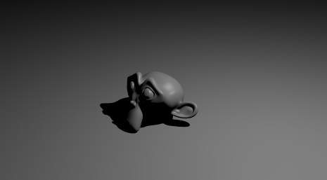
Sun 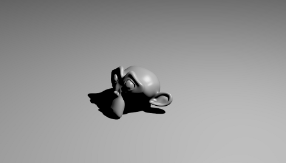
Spot 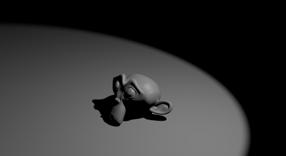
Hemi 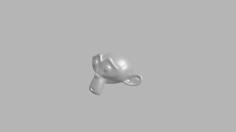
Area 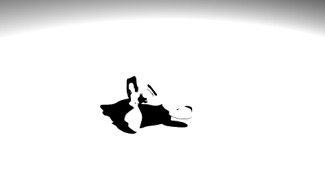
POINT
O Point é um ponto de luz omnidireccional, emite luz em todas as direcções. Boa luz para diversos fins mas sobretudo para preenchimento ou iluminação secundária.
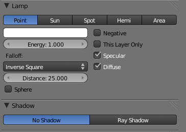Para perceber melhor o que isto significa, pense num candeeiro de rua.
Cor: cor da luz emitida pela lâmpada.
Energy: energia/intensidade da luz.
This Layer Only: lâmpada só ilumina objectos que estejam no mesmo layer.
Negative: lâmpada emite luz negativa, subtrai luz (em vez de adicionar).
Diffuse: luz (não) emite a cor (diffuse) definida sobre os objectos.
Specular: luz (não) cria brilhos (specular).
menu Falloff: método para transição entre área iluminada e área não iluminada.
(Falloff) Distance: distância a que a lâmpada está a 50% da sua intensidade.
Sphere: luz tem intensidade 0 para lá do valor definido em Distance.
Diferentes exemplos de iluminação só com um Point
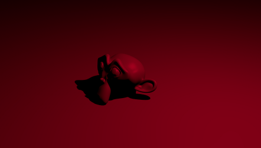SUN
O Sun é uma luz que pretende simular a luz solar. Emite uma luz de intensidade constante (iluminação independente da distância a que se encontram os objectos) numa direcção. Ou seja, o seu posicionamento não é importante, é com o ângulo/rotação da luz que deve preocupar-se. É a única que afecta o Sky e é uma boa opção para Key Light.

As configurações base da Sun são bastante simples e não diferem da luz anterior.
O painel Sky & Atmosphere permite aplicar outros parâmetros fazendo com que a luz Sun afecte o Céu e a Atmosfera. As pré-configurações Classic, Desert e Mountain (só funcionam se activar o Sky e Atmosphere) facilitam a configuração.
Pode encontrar mais informações sobre estes parâmetros no URL: http://wiki.blender.org/index.php/Doc:Manual/Lighting/Lamps/Sun/Sky_and_Atmosphere
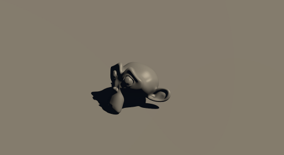SPOT
A Spot é uma luz direccional, funciona como um cone de luz ou uma lanterna. Tradicionalmente, é uma das lâmpadas mais utilizadas, dada a sua versatilidade e possibilidades de controlo. É uma óptima opção para Key Light mas pode ser utilizada para todos os fins.
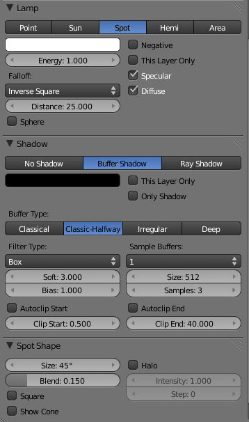As configurações base não diferem das do Point.
Relativamente às sombras, partilha características com as outras lâmpadas (ver abaixo) mas é a única que permite sombras do tipo Buffer Shadow. Este método é mais difícil de configurar e menos exacto do que o Ray Shadow mas é significativamente mais rápido.
Configurações da Spot Shape:
Size: ângulo (abertura) do spot, dimensão da área onde incide a luz.
Blend: suavidade da transição entre área iluminada e área sem iluminação.
Square: a área de spot passa a quadrada.
Show Cone: mostra o cone na janela 3D View.
Halo: renderiza uma luz volumétrica, renderiza um cone de luz.
Intensity: intensidade do Halo.
Diferentes exemplos de iluminação só com uma Spot
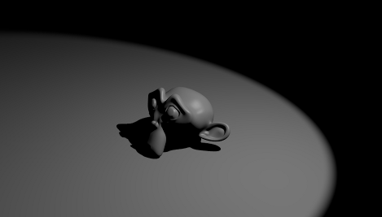 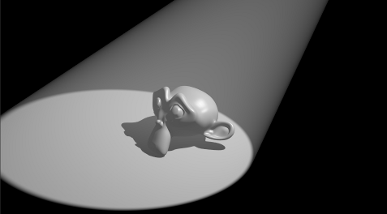HEMI
A Hemi é uma luz direccional sem sombras. Produz uma iluminação suave e é uma forma simples de preencher a cena com iluminação. São mais úteis como Fill Light ou Back Light.
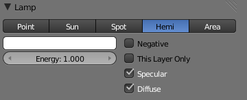Tal como com a Sun, o seu posicionamento não é importante, apenas importa o ângulo da luz.
AREA
Area é uma luz direccional (está apontada numa direcção) que simula a emissão de luz a partir de um plano ou superfície.
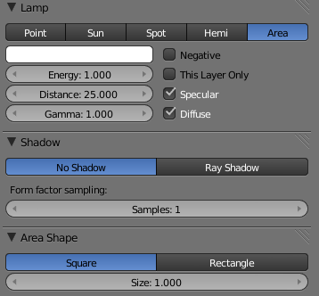Como precisam de mais tempo de processamento, utilize com cautela.
São bastante semelhantes às luzes Spot e costumam ser utilizadas como Key Light.
Gamma: valor de correcção do brilho da iluminação, valores mais altos produzem mais contraste.
Area Shape: permite definir a forma da área (quadrado ou rectangular) de onde emite luz e a dimensão.
Diferentes exemplos de iluminação só com uma Area
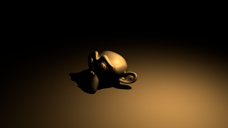 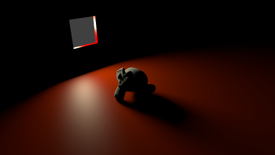SHADOW
No Shadow: luz não emite sombras.
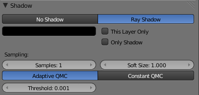Ray Shadow: luz gera sombras por ray tracing.
Cor: cor da sombra.
Only Shadow: só cria sombras
This Layer Only: só objectos no mesmo layer é que emitem sombras.
Método para gerar sombras: Adaptative QMC é mais rápido, Constant QMC é melhor.
Soft Size: dimensão da área de penumbra, área em torno da sombra (separa da área iluminada)
Samples: nº de amostras (samples) utilizado para calcular sombras (mais samples = melhor qualidade = mais demorado).
Threshold: só disponível no Adaptive QMC, ajuda a definir que samples são tidas em conta. Quanto mais alto = mais rápido = menor exactidão nas sombras.
Diferentes exemplos de Ray Shadow só com uma lâmpada
 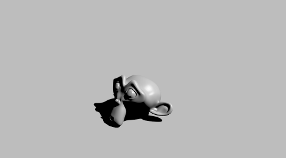
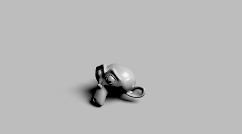
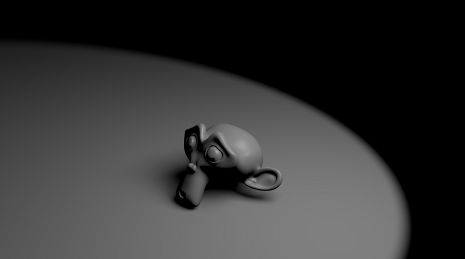
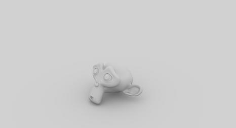
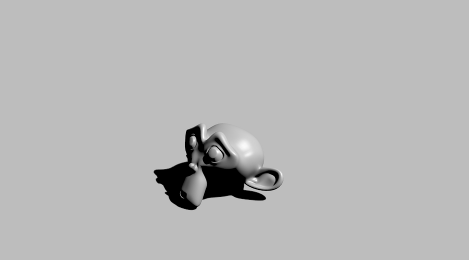
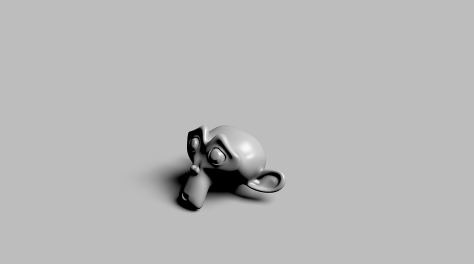
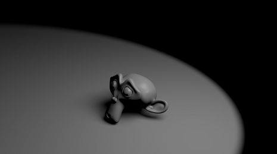
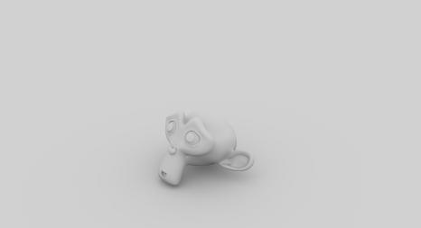
Iluminação de 3 pontos (e 4 pontos) no Blender Render
A iluminação com três pontos é uma das técnicas de iluminação mais utilizadas em fotografia e 3D para iluminar personagens ou objectos focados pela câmara. Este sistema recorre a 3 pontos de luz:
1. Luz principal (key light): Luz forte que gera a maior parte da iluminação. Habitualmente, é posicionada perto (ao lado) da câmara e está apontada ao objecto a iluminar, em foco. É a primeira luz a ser posicionada e a sua posição depende da câmara.
2. Luz de preenchimento (fill light): Regra geral, este ponto de luz encontra-se colocado do outro lado da câmara, em relação à Luz principal (Sugestão: desenhe uma linha imaginária entre a Key Light e o objecto, rode 90º tendo o objecto como pivot e posicione a sua Fill Light). Aponta directamente para o objecto tentando amenizar/suavizar as fortes sombras e contrastes criados pela Luz principal. Esta luz deve ser mais suave ou menos intensa (geralmente, metade da luz principal) e mais dispersa.
3. Contra-luz (back light ou rim light): Geralmente, os dois pontos de luz anteriores estão posicionados frontalmente, deixando a parte posterior do(s) objecto(s) sem iluminação. Este ponto de luz serve para completar a iluminação, permitindo destacar os contornos do objecto, reforçando a sua tridimensionalidade e fazendo com que o(s) objecto(s) se destaque(m) do fundo. Esta luz costuma estar atrás do objecto, no lado oposto à câmara.
4. Luz de fundo de cenário (set light ou background light): Por vezes, é utilizada uma quarta luz para iluminar o fundo, permitindo maior controle sobre a atenção ou destaque a atribuir ao fundo. Quando utilizada, é a última luz a ser posicionada.
 Imagem de Ben Simonds publicada em Lighting Tips from the Masters.
Imagem de Ben Simonds publicada em Lighting Tips from the Masters.
Sugestão:
- Key light: Spot com Buffer Shadows. Valores pré-definidos mas com Spot Shape Size a 60º e opções Autoclip Start e Autoclip End activados.
- Fill light: Hemi com Energy 0.5 e Specular desactivado.
- Back light: Hemi com Energy entre 0.75 e 1.0, Specular desactivado.
Dica útil: Por vezes, é recomendável aparentar as lâmpadas à câmara depois de obter uma configuração de luz interessante. Deste modo, pode depois movimentar a câmara livremente, escolhendo outra perspectiva sobre o objecto, sem ter receio de desequilibrar ou destruir a configuração de luz ;)
Ambient Occlusion, Environmental Lighting e Indirect Lighting
Ambient Occlusion
O Ambient Occlusion (AO) é um método sofisticado inventado pela Industrial Light & Magic para simular iluminação global, permitindo criar cenas iluminadas de forma mais natural e realista. Com este método, é possível obter uma iluminação suave e difusa, com sombras suaves, semelhante à iluminação ao ar livre de um dia nublado, sem utilizar qualquer lâmpada.
Em termos simples, o AO é calculado através do envio de raios de luz em todas as direcções a partir das superfícies. Os raios que chegam ao fundo, ao "sky", aumentam a claridade da superfície e os raios que colidem com outros objectos escurecem. Por outras palavras, objectos rodeados de geometria estão menos iluminados que objectos isolados. O AO é muito popular na indústria da animação pela sua simplicidade e eficiência.
Para experimentar o AO, apague todos os pontos de luz (Lamps) que tiver na cena e active o Ambient Occlusion (painel World). É possível, e em alguns casos recomendável, utilizar o AO em combinação com outros métodos de iluminação. Ou seja, pode sempre utilizar o AO para criar um nível mínimo de visibilidade e reforçar a iluminação e/ou sombras com Lamps, por exemplo.
No exemplo abaixo, a cena é constituída apenas por 1 câmara, 1 plano e 7 suzannes. Foram utilizados os parâmetros de configuração do AO pré-definidos.
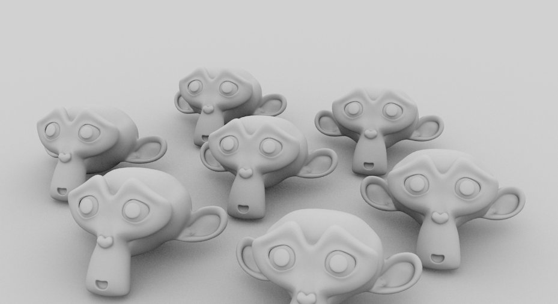O AO tem em conta a Ambient Color. Repare no que aconteceu quando alterámos a Ambiente Color da nossa cena.
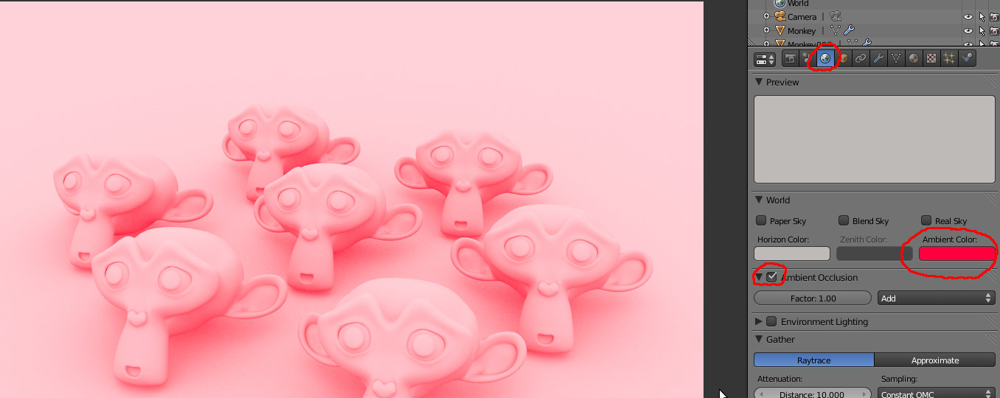 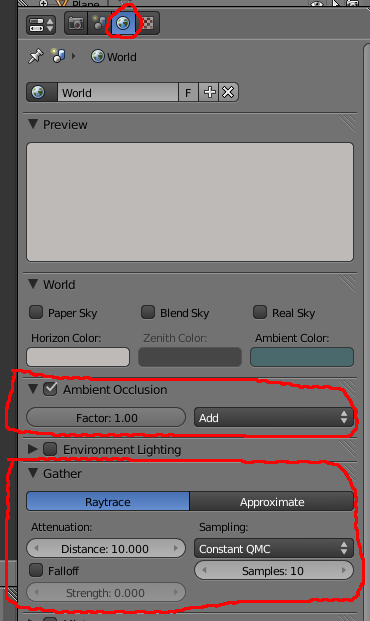 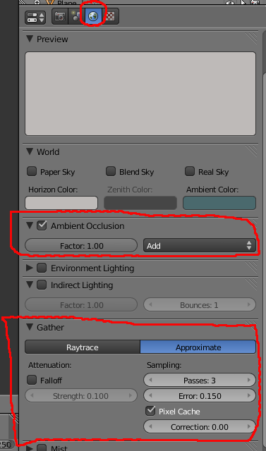Principais opções de configuração
Factor: controla a intensidade/força do Blend Mode do AO.
Blend Mode: define a forma como o AO afecta os materiais. O mais comum é o Add, adiciona luz/sombra de acordo com a oclusão encontrada, permite aclarar a cena. Se utilizar o Multiply deverá incluir outra fonte de luz.
Método para recolha dos dados de oclusão: Raytrace (mais exacto) e Approximate (mais rápido) .
Samples: nº de raios disparados para detectar a oclusão dos objectos presentes na cena. + raios = > exactidão/qualidade = + tempo para renderização. 5 é um bom número para pré-visualizações. O “granulado” na imagem que este método produz é eliminado aumentando o nº de Samples.
Distance: comprimento dos raios. Se aumentar, os objectos mais distantes são tidos em conta para calcular a oclusão (= mais tempo) .
Falloff: a distância para os objectos é utilizada para atenuar as sombras. Se activar pode controlar a força deste factor, valores mais altos = sombras mais curtas.
Sampling (raytrace): método para gerar amostra de sombras. Constant QMC permite melhor qualidade dos resultados.
Passes: nº de passagens (+ passagens = + tempo de renderização)
Correction: factor de correcção, permite corrigir excesso de escurecimento que pode ocorrer com este método.
Error: tolerância ao erro (quanto menor a tolerância mais tempo demora e melhor qualidade é obtida)
Pixel Cache: usa interpolação (utiliza dois pólos para calcular o meio) entre pixels e aumenta bastante a rapidez.
Sugestão de configuração do AO para animação
Apesar de ser menos exacto, o método “Approximate” permite maior rapidez e boa qualidade. Daí ser um método bastante comum para iluminação em animações, permitindo conjugar bons resultados com rapidez.
Sugestão:
Approximate
Passes 5
Correction 0.5
Error 0.250
PixelCache activado
Falloff a seu gosto
Environmental Lighting e Indirect Lighting
Se o Ambient Occlusion adiciona sombras (áreas mais claras e mais escuras) baseando-se na distância entre os objectos presentes na cena, o Environmental Lighting adiciona iluminação vinda do ambiente.
Ambas as soluções podem ser combinadas com lâmapadas, activadas em simultâneo ou activadas isoladamente.
Ambas as soluções podem utilizar Raytrace ou Approximate para recolha dos dados. Sendo esta última mais rápida mas menos exacta. Caso utilizem Approximate, é possível activar a Indirect Lighting, luz indirecta que vem dos raios reflectidos nos objectos circundantes.
Estas 3 opções (AO, EL e IL), constituem boas soluções para criar uma boa base, uma boas luz ambiente. No entanto, raramente permitem dispensar a utilização de lâmpadas.